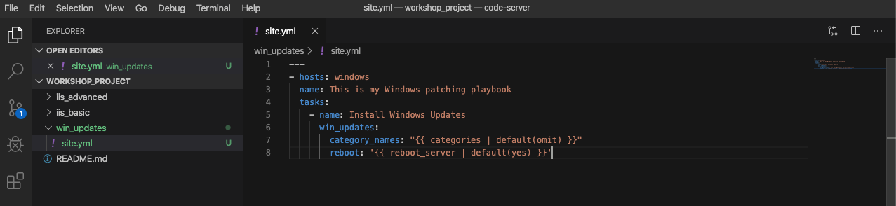

5 - Optional: Automated Patching
The win_updates module is used to either check for or to install Windows Updates. The module utilizes the built in Windows Update service to function. This means that you still will need a backend system like WSUS or the online Windows Update Servers to download updates from. If your server’s Windows Update configuration is set to automatically download but not install, you can also utilize the module to stage updates by telling it to search for updates. We also have the ability to whitelist or blacklist updates. For example we could tell it to only install one particular security update instead of every update available.
To begin, we are going to create a new playbook. We will be repeating the steps you performed in the earlier exercises.
Step 1 - Create folder structure
Within Visual Studio Code, we will now create a new directory in your git repository and create a new playbook file.
In the Explorer accordion you should have a student# section where you previously made iis_basic.

Hover over the WORKSHOP_PROJECT section and click the New Folder button. Type win_updates and hit enter.
Now right-click the win_updates folder and click the New File button. Type site.yml and hit enter.
You should now have an editor open in the right pane that can be used for creating your playbook.

Step 2 - Write Playbook
Edit your site.yml and add a play definition and some tasks to your playbook. This will cover a very basic playbook for installing Windows Updates. Typically you would have even more tasks to accomplish the entire update process. This might entail creating service tickets, creating snapshots, or disabling monitoring.
---
- hosts: windows
name: This is my Windows patching playbook
tasks:
- name: Install Windows Updates
ansible.windows.win_updates:
category_names: "{{ categories | default(omit) }}"
reboot: '{{ reboot_server | default(true) }}'
What are we doing?
The module win_updates is used for checking or installing updates. We tell it to only install updates from specific categories using a variable. reboot attribute will automatically reboot the remote host if it is required and continue to install updates after the reboot. We will also use a survey variable to stop us from rebooting even if needed. If the reboot_server value is not specified we will set the reboot attribute to true.
Step 3 - Save and Commit
Your playbook is done! But remember we still need to commit the changes to source code control.
Add the files to the local staging area.
Commit the changes by providing a commit message.
Sync to the remote Git.
Click File Save All to save the files you’ve written

Click the Source Code icon (1), type in a commit message such as Adding windows update playbook (2), and click the check box above (3).

Sync to the remote Git by clicking the arrows on the lower left blue bar.

It should take 5-30 seconds to finish the commit. The blue bar should stop rotating and indicate 0 problems…
Step 4 - Create Job Template
Now, back in Controller, you will need to resync your Project so that the new files show up.
Next we need to create a new Job Template to run this playbook. So go to Template, click Add and select Job Template to create a new job template.
Complete the form using the following values:
Danger
Your playbook targets the windows group. We have all test hosts in the inventory Workshop Example CC, you must place a limit on your job template!
If you target the complete windows group, you will automate all hosts, even those of your colleagues!
| Key | Value | Notes |
|---|---|---|
| Name | Windows Updates username | |
| Description | Template for Windows updates | |
| Job Type | Run | |
| Inventory | Workshop Inventory | |
| Project | Ansible Workshop Project username | |
| Execution Environment | BSS EE - Windows | |
| Playbook | win_updates/site.yml |
|
| Credentials | Azure DevOps username | |
| Limit | Your single host as in your local inventory! | Do not target the windows group! |
| Options | Enable Fact Storage |
Danger
Did you set the limit?
Click SAVE  and then select ADD SURVEY
and then select ADD SURVEY

Complete the survey form with following values:
| Key | Value | Note |
|---|---|---|
| PROMPT | Categories | |
| DESCRIPTION | Which Categories to install? | |
| ANSWER VARIABLE NAME | categories | |
| ANSWER TYPE | Multiple Choice (multiple select) | There's also a single selection option |
| MULTIPLE CHOICE OPTIONS | Application Connectors CriticalUpdates DefinitionUpdates DeveloperKits FeaturePacks Guidance SecurityUpdates ServicePacks Tools UpdateRollups Updates |
|
| DEFAULT ANSWER | CriticalUpdates SecurityUpdates |
|
| REQUIRED | Selected | |

Once complete, click the ADD  button. You will see your new field off to the right. Now add another field by filling out the form on the left again.
button. You will see your new field off to the right. Now add another field by filling out the form on the left again.
| Key | Value | Note |
|---|---|---|
| PROMPT | Reboot after install? | |
| DESCRIPTION | If the server needs to reboot, then do so after install | |
| ANSWER VARIABLE NAME | reboot_server |
|
| ANSWER TYPE | Multiple Choice (single select) | |
| MULTIPLE CHOICE OPTIONS | Yes No |
|
| DEFAULT ANSWER | Yes | |
| REQUIRED | Selected |

Select ADD , then select SAVE .
Back on the main Job Template page, select SAVE again.
Step 5 - Running the playbook
Now let’s run it and see how it works.
Select TEMPLATES.
Hint
Alternatively, if you haven’t navigated away from the job templates creation page, you can scroll down to see all existing job templates.
Click the rocketship icon  for the Windows Updates Job Template.
for the Windows Updates Job Template.
When prompted, enter select the update categories. Answer Yes to the Reboot after install? prompt and click NEXT.
After the job launches, you should be redirected and can watch the output of the job in realtime.